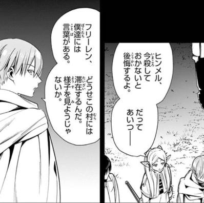
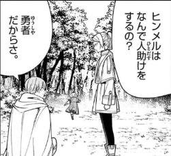
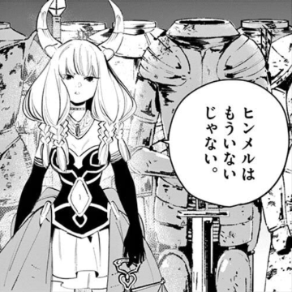
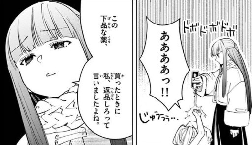
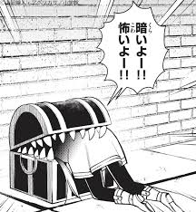

あらすじ
かつて、勇者ヒンメル一行が魔王を倒し、長き戦いに終止符を打った。魔法使いフリーレンはその一員であり、千年以上生きるエルフだった。戦いの後、仲間たちはそれぞれの道を歩み、時が経つ。
しかし50年後、勇者ヒンメルが老いて亡くなったことをきっかけに、フリーレンは「人間のことを何も知らなかった」と痛感し、彼の足跡を辿る旅に出る。旅の中で、かつての仲間との思い出を振り返りながら、新たな仲間（弟子フェルンや戦士シュタルク）と出会い、人間の感情や生き様に触れていく。
この物語は、「英雄譚の“後日譚”」を描いたファンタジーであり、時間の流れの中での喪失と成長、そして記憶の尊さを静かに語る作品です。
好きなポイント
ストーリー
まず始まりが「勇者が亡くなった後の後日譚」という今までになかった始まりでもう感動しました。
勇者パーティーの成長の軌跡を描くのではなく、勇者パーティーのエルフが人間を理解するためにあの頃の思い出を新しい仲間ともう一度旅をするというコンセプトがおしゃれ過ぎて大好きです
世界観
この世界には人間、エルフ、魔族と様々な種族がいます。
それだけなら他の作品でもあるかと思いますが、この世界では種族ごとの感情の違いが顕著で、そこが魅力の一つです。
- エルフ：子孫繁栄や他の種族に対して興味が無く、フリーレンも、勇者パーティーに居たときは人間の言葉を喋る魔族を殺すことをためらったヒンメルに躊躇なく殺すよう助言ができたり、困りごとを見つけるたびに全部に手を差し伸べるヒンメルを不思議に思ったりしていた。  
- 魔族：エルフと同じく他の種族に対して興味が無く、大魔族アウラも、亡くなっているヒンメルの言葉を尊重するフリーレンに対して「ヒンメルはもういないじゃない」と本当に理解できない様子だった。
加えて『悪意』という概念が無いため、本誌では「悪意を持って人間に接することを禁ず」という契約を結ぶも、まったくもって支障のない魔族もいた。

フリーレン
・強くてかわいい
・(変な)魔道具が大好きで、よく商店で買い漁ってはフェルンに叱られたり、片っ端から宝箱を開けてはミミックに食べられている。
 ・ヒンメルが亡くなってからは「ヒンメルならそうする」と言って積極的に人助けをす るようになり、少しずつ人間という種族について理解していく様子に感動します。